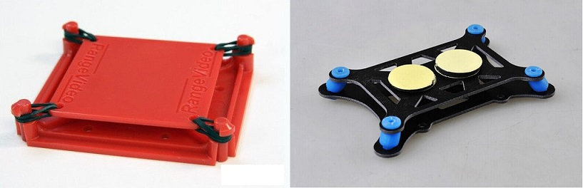
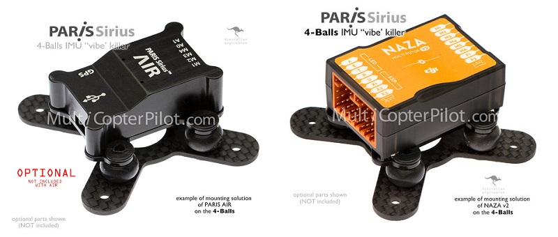
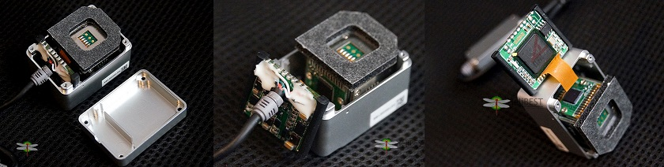
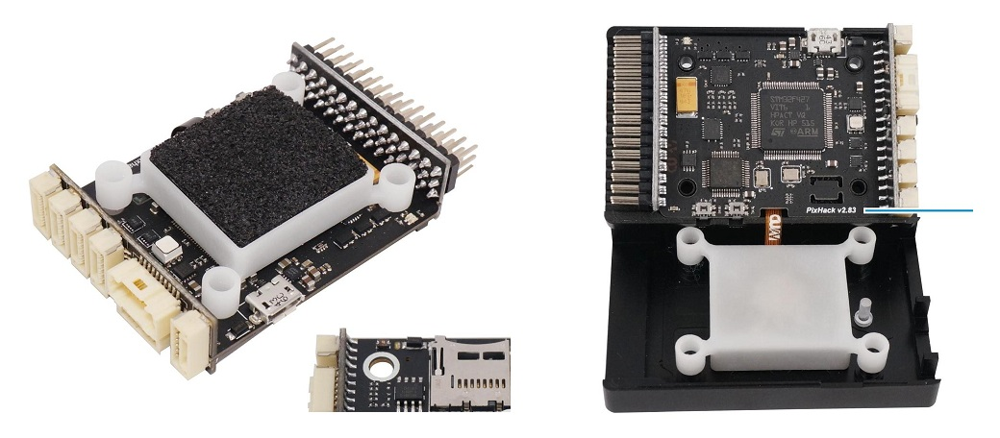
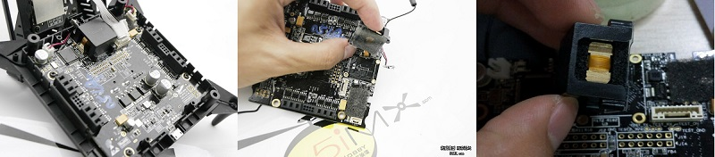
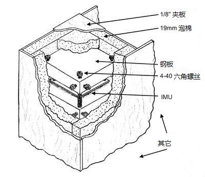

振动来源
振动来源有两个，一个是自身，一个是外界。外界主要有风，或者碰撞等，这里不加考虑。自身主要有电机、桨、结构件之间的共振等。这里边，电机自身的振动并不大，但装上桨以后，由于拉力变大，如果桨的动平衡比较差，就会引入很大的振动。如果振动频率和结构件的固有频率重合，就会引起共振。此外，结构件之间的缝隙，也会使振动进一步放大。
振动的影响
- 降低飞机部件的寿命。严重时会导致机体散架。早期在diy自己的第一架飞机时，由于没有经验，将桨面装反，振动很大，以至于将机架螺钉和压桨的螺母震掉，导致射桨和机架散架。
- 给加速度、陀螺仪等传感器引入很多噪声和偏差，导致飞控姿态估计错误，飞机不能起飞或炸鸡。
- 其它的影响，比如对于航拍的飞机，会导致拍照模糊、视频抖动等。
振动的抑制
抑制振动的方式有两种，机械的和软件的。
机械方法
首先，要从源头上抑制振动。电机要保证状态良好，转轴没有被摔弯。桨的动平衡要好。机臂硬度要高。各机械部件之间贴合要牢靠，不留缝隙等。
然后再设计减振模块，使imu和机身隔离，进一步减弱振动。
机械减振原理。
减振模块的固有振动频率远离机身振动的频率，避免和减振模块共振，从而达到减振的效果。可以将减振模块看做一个受迫振动系统，机身振动作为驱动输入。当减振模块的固有频率和输入频率相同时，二者共振，振动被放大。当二者远离时，输入频率被抑制，相当于减振。
减振模块设计。
设减振模块的固有频率公式如下：
$$
f=\frac{1}{2\pi}\sqrt{\frac{k}{m}}
$$
其中，m为减振模块的质量。k为减震垫的劲度系数。设计减振模块，就是通过调整k和m，使f远离机身振动频率。具体为调整减振垫的硬度，给IMU加不同质量的配重块。
设计好的减振模块并不容易。简单的加橡胶管或泡棉，有时候非但起不了减振的效果，反而会将振动放大。IMU模块越轻，减振越难，需要的减振垫要越小、越软。如果可能，最好将电池、飞控和所有其它可能的重量集中到一起来做减振。
减振模块种类
目前市场上的减振模块主要有两大类，外部减振和内部减振。很多的开源飞控，如pixhawk，由于没有内置减振，所以需要添加额外的减振模块，见淘宝上的各种类型的减振神器。像大僵等商业飞控，都内置了减振结构。
- 外部减振
如下图所示，通常由上下两层板组成，一大一小。四个角由弹性材料连接，或橡皮筋或橡皮球。这种通常是将整个飞控模块装在上层板上。由于整个飞控通常重量比较大，这种方式还可行，一定程度上可以起到减振效果。之前自己diy的一架飞机就是采用的这种减振方式，效果还不错。

下面是另一个类似的减振模块及装上飞控后的效果。

- 内部减振
像大僵这些公司的商用飞控，大多采用了内减振的方式。结构大体相似，IMU加上配重，上下有泡棉包裹。四轴由外壳固定。下图是大僵A2飞控的内部结构。

下面是大僵naza飞控的内部结构，

除此以外，国内一家公司改进pixhawk飞控，也采用了类似的方式。

零度将IMU单独拎出来做减振，除了体积小一点，结构大体类似，如下图。一个铜块配重，上下两层泡棉。外面用一个金属外壳固定。

下面是ppz官网介绍的一种减振结构。基本是用钢板将IMU模块夹在中间，四周用泡棉包裹，最外层用夹板固定。这里特别提到了减振材料为“latex foam rubber”时效果较好，是作者通过实验验证了的。还有就是泡棉要软、配重要大，尽可能的降低减振模块的固有频率。同时，泡棉IMU钢板模块和外部夹板之间的缝隙不能太大。大的运动，会增加加速度的噪声。大的转动，会增加陀螺仪的噪声。

综合以上，内减震的结构大同小异。难点主要在于如何根据飞机的振动频率选择合适的配重和减振垫。以及结构间的配合和精密安装。
软件方法
有时候，受大小和重量的限制，不可能随心所欲的设计机械减振结构，或者在振动比较大的时候，机械减振效果不佳。这个时候就需要考虑采用软件滤波。比如滑动平均滤波等。但软件滤波有一个缺点，就是会有延迟，这会影响姿态控制。通常，机械减振和软件滤波都会用到，已到达好的减振效果，但需要根据实际情况在二者之间做一个权衡，以满足设计要求。